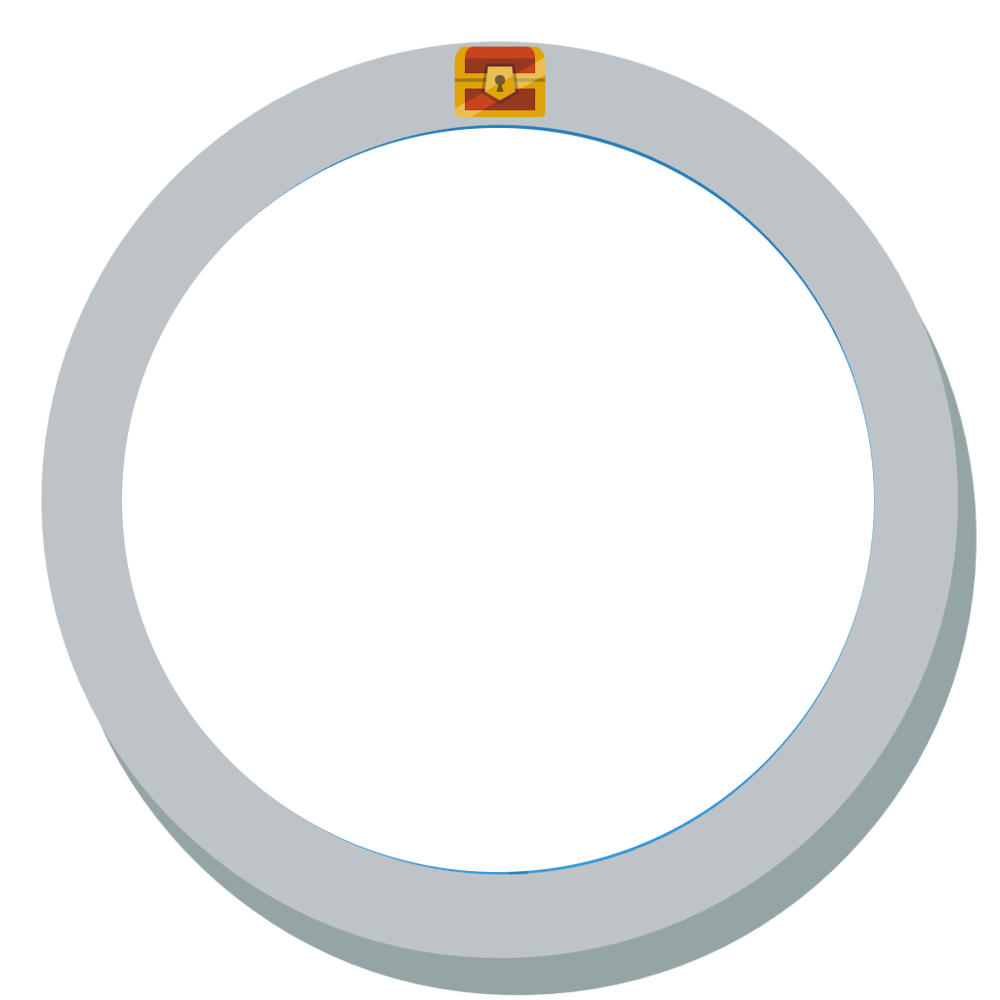

<link rel="import" href="../../../bower_components/polymer/polymer.html">
<link rel="import" href="../../../bower_components/paper-ripple/paper-ripple.html">
<dom-module id="my-compass">

	<template>
        <style>
            .circle {
            display: inline-block;
            position: relative;
            border-radius: 50%;
            height:50%; 
            width: 25%;
            font-size: 30px;
            color: #555;
            text-align: center;
            vertical-align:middle;
            margin-left: 65%;
        }
        </style>
       	<div class="circle">
            
            
            <paper-ripple id="ripple" style="color: blue" center></paper-ripple>
        </div>
    </template>
    <script>
    (function() {
        'use strict';

        Polymer({
            is: 'my-compass',

            computeCompass: function(angle) {

                var _userCoordD = new google.maps.LatLng(this.userlat, this.userlng);
                var _POICoordD = new google.maps.LatLng(this.markerlat, this.markerlng);
                this.headingDegree = google.maps.geometry.spherical.computeHeading(_userCoordD, _POICoordD)
                console.log(this.headingDegree)

                if (this.headingDegree <= 0) {
                    return 'transform: rotate('+ ((360 - this.headingDegree) - angle) +'deg); height 50%; width : 50%; position:absolute; top:0; bottom:0; left:0; right:0; margin:auto;';
                } else {
                    return 'transform: rotate('+ (this.headingDegree - angle) +'deg); height 50%; width : 50%; position:absolute; top:0; bottom:0; left:0; right:0; margin:auto;';
                }

            },

            _headingDistanceChanged: function(newDistance) {
                if (newDistance > 1000) {
                    this.async(function() {
                        this.$.ripple.style = "color: blue"
                        this.$.ripple.simulatedRipple()
                        console.log("Far")
                    }, 3000);
                } else if (newDistance > 500) {
                    this.async(function() {
                        this.$.ripple.style = "color: green"
                        this.$.ripple.simulatedRipple()
                        console.log("Still far but less")
                    }, 1000);
                } else {
                    this.async(function() {
                        this.$.ripple.style = "color: red"
                        this.$.ripple.simulatedRipple()
                        console.log("Near")
                    }, 250);
                }
            },

            properties: {

                headingdistance: {
                    type: Number,
                    notify: true,
                    observer: '_headingDistanceChanged'
                },

                headingDegree: {
                    type: Number,
                    notify: true,
                },
            }
        })
    })();
    </script>
</dom-module>